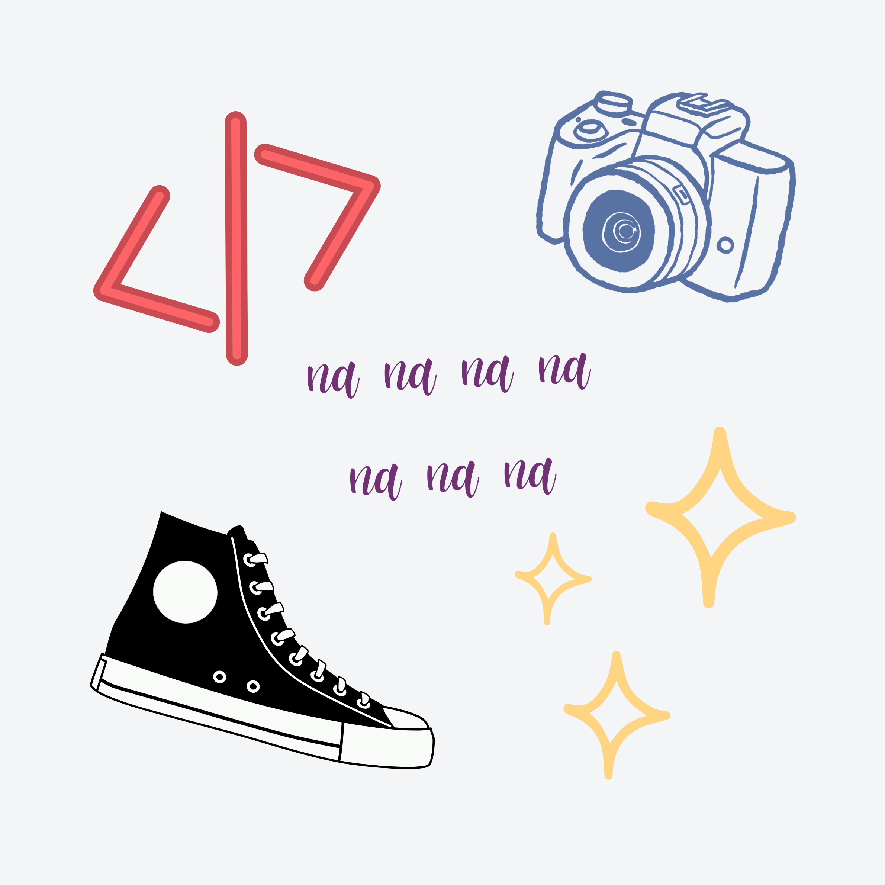

22-year-old female human. Current location: Jos, Nigeria.
When I'm not coding, I am busy taking photos or writing, among other things. I would say I wear many hats, but I prefer to let my locs breathe. If you walk past this person on the street, there's a 93.6% chance it's me.
When my metaphorical hats are off, I looove to kick back and relax with a good fantasy book and pretend that this world is not real, or watch Real Madrid kick butt, or sleep because - you know - adulting is hard.
As a friendly shy person, I am somewhere on the Introvert-Extrovert scale. Family is super important to me, and not just the blood type. Alone is good - great actually - but I generally enjoy working (and playing) with other humans.
I am currently pursuing a degree in Computer Engineering at the University of Ilorin.
My journey into coding started in September 2018, about 6 years ago. Woah. That actually sounds like a lot when you say it out loud (please read with your head voice).
I took a course on basic Front and Back End Development, and my "interest" very quickly sparked into a passion for solving problems and creating cool stuff with code.
I've had a great learning journey and picked up more knowledge and skills in a number of technologies and frameworks. I try to be impartial but ReactJS has my heart.
If my chatter has somehow intrigued you and you fancy an interaction, I have a Twitter account. I almost never check my dms (I almost never get any dms tbh), so if it's more pressing (like a project collaboration or job offer) you can send me an email. Yes, I refresh my email every few hours waiting for good news, don't judge me.
I think I've overshared enough. Thanks for stopping by. x